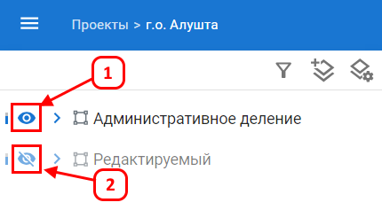
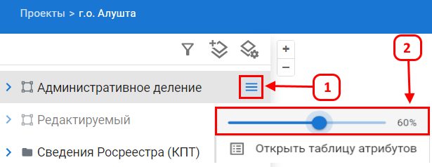
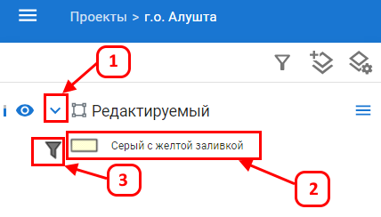
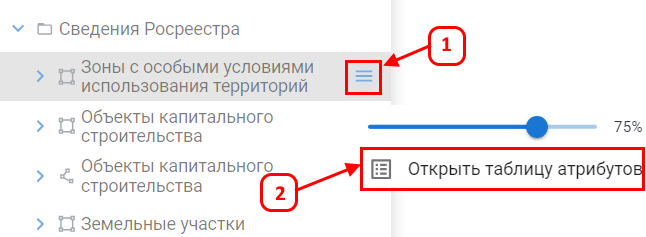
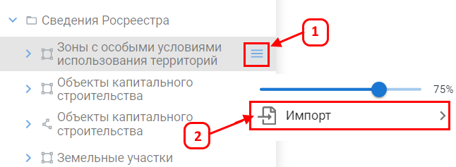
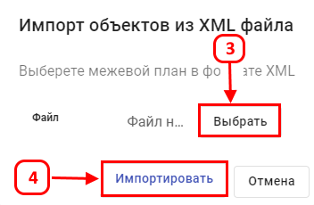
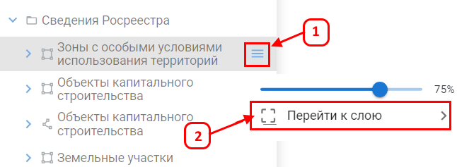

Управление слоями
Панель слева отображает список всех слоев, доступных в текущем проекте. Через нее выполняется включение, отключение, настройка прозрачности, просмотр легенды, открытие атрибутивной таблицы, импорт данных и переход к слою.
Отображение и скрытие слоя
- Чтобы скрыть слой, нажмите значок Видимый глаз (1).
- Чтобы отобразить слой, нажмите значок Перечеркнутый глаз (2). Слой появится на карте.

Настройка прозрачности слоя
По умолчанию прозрачность слоя установлена на 70%. Для изменения прозрачности выполните:
- Откройте дополнительное меню слоя
 .
.
- Перетащите ползунок для изменения прозрачности.

Отображение легенды слоя
- Нажмите значок Стрелка (1).
- Под слоем отобразится легенда с обозначениями (2).
- Для показа всех знаков легенды, а не только тех что сейчас на карте нажмите (3.)

Открытие таблицы атрибутов
- Откройте дополнительное меню нужного слоя .
- Выберите Открыть таблицу атрибутов (2).
- Таблица с атрибутивной информацией отобразится в отдельном окне.

Импорт данных в слой
- Откройте дополнительное меню слоя (1) и нажмите кнопку Импорт (2).

- Выберите файл XML (межевой план) или SHP (геометрия) (3).
- Нажмите Импортировать (4). Данные появятся на последней странице атрибутивной таблицы.

Переход к слою
- Включите нужный слой.
- Откройте его дополнительное меню (1).
- Нажмите Перейти к слою (2).

Карта отобразит весь слой в масштабе, оптимальном для его просмотра.